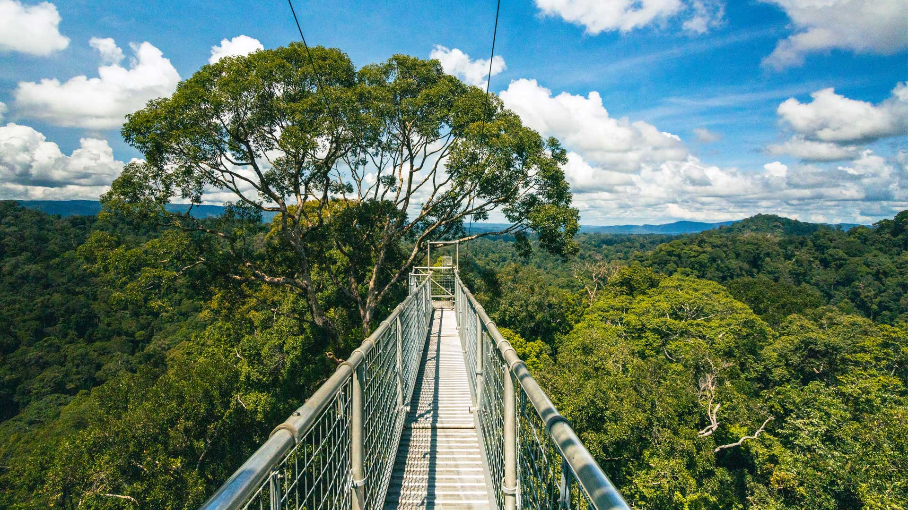
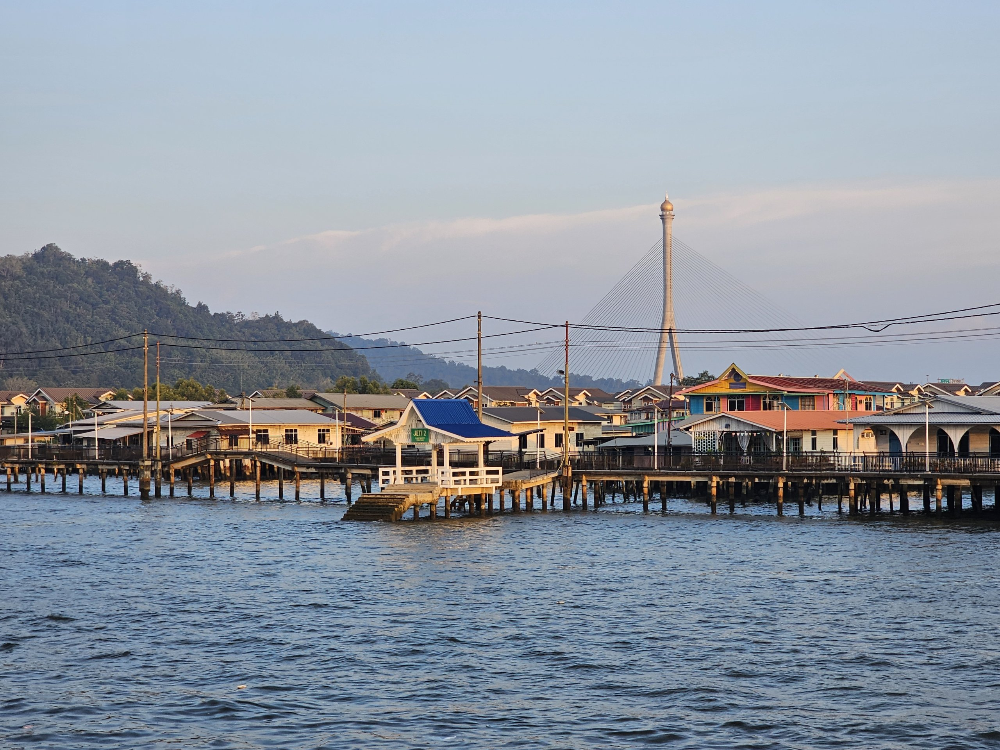
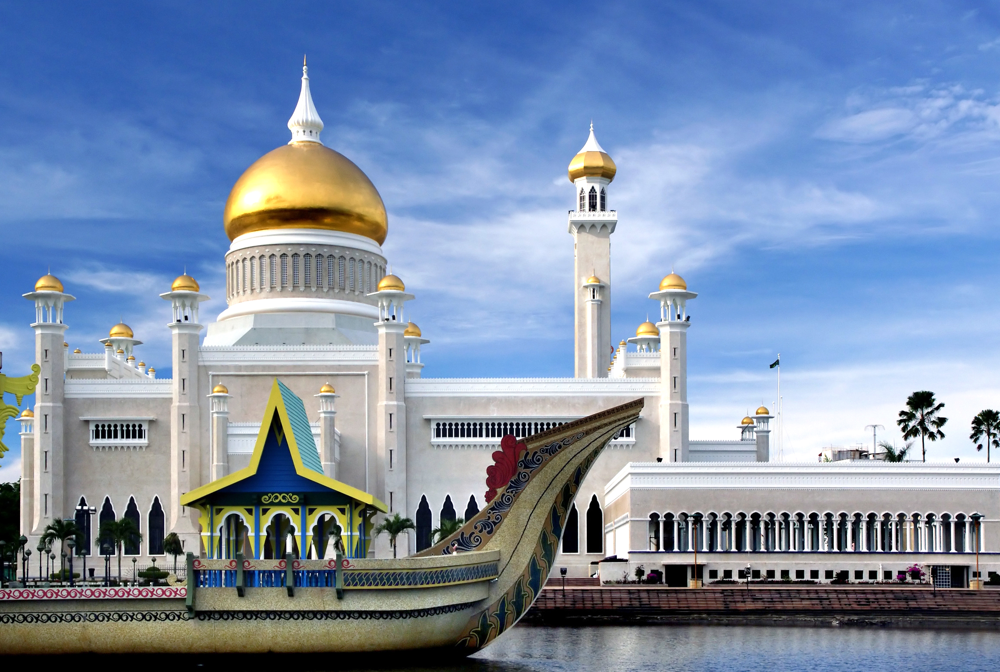
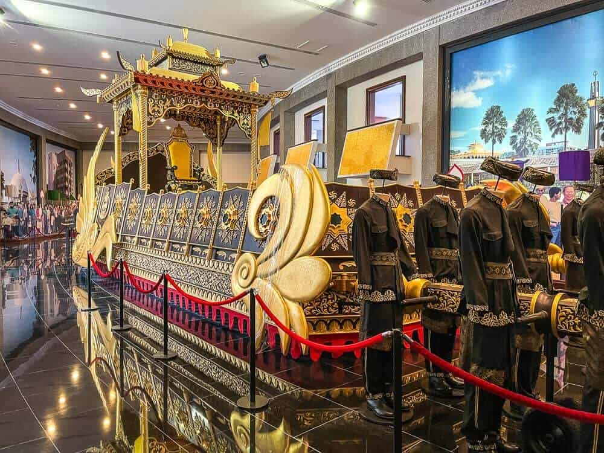
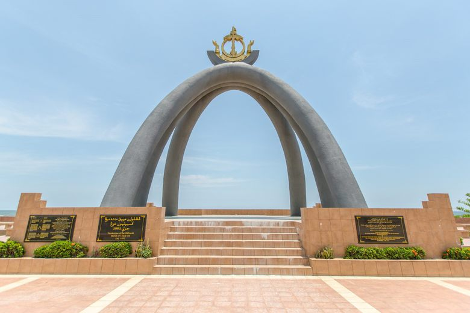

Must Try Experiences

Ulu Temburong National Park
Also Known as the "Green Jewel of Brunei," Visitors can ascend the iconic steel canopy walkway towers rising 50 meters above the jungle floor for breathtaking, mist-veiled sunrise vistas over untouched ancient Borneo wilderness.

Kampong Ayer
Kampong Ayer is the world's largest historic water settlement. For centuries, thousands of residents have lived in traditional wooden houses built entirely on stilts above the Brunei River, connected by an extensive labyrinth of elevated concrete and wooden boardwalks complete with schools, clinics, mosques, and fire brigades.

Omar Ali Saifuddien Mosque
Designed with a stunning fusion of Mughal architecture and Italian classical styles, the mosque features magnificent pure gold domes, imported Italian marbles, and a ceremonial 16th-century royal barge gracefully resting in its surrounding mirror-like reflecting lagoon.

Royal Regalia Museum
Located in the historic center of the capital, this grand museum displays the history of Brunei's monarchy and is included with exhibits that feature the magnificent silver chariot used during royal coronations, jewel-studded ceremonial crowns, gold and silver royal armory, and priceless diplomatic state gifts presented by leaders from across the globe.

Billionth Barrel Monument
Constructed along the scenic coastlines of Seria in the Belait District "the birthplace of Brunei's petroleum industry", this striking sculptural landmark commemorates the production of the nation's one-billionth barrel of crude oil, celebrating the economic foundation that shaped modern Brunei.